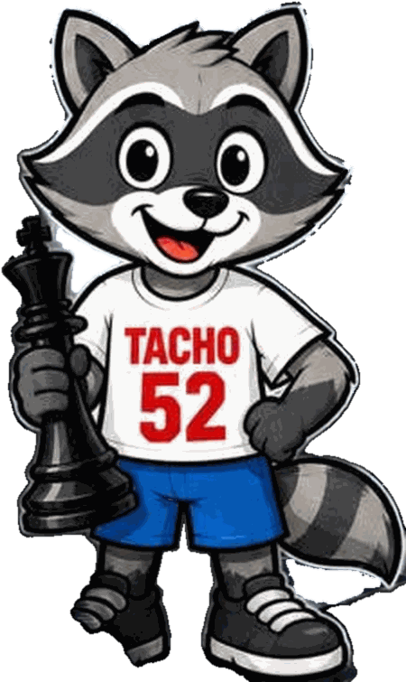

El Liceo Anastasio Alfaro te invita al
Torneo IntereducativoTacho Chess 2
¡Inscripción gratuita!
De primer grado a undécimo año

- Fecha
- Sábado 14 de noviembre de 2026
- Hora
- A partir de las 8:30 a.m.
- Sede
- Gimnasio del Centro, Liceo Anastasio Alfaro
Organiza Liceo Anastasio Alfaro (San José, 1952)
Árbitro principal: FA Jean Carlo Quesada Arauz
Ritmo: 7 rondas a 10 minutos + 2 segundos
El torneo
Sábado 14 de noviembre de 2026
La llegada es a las 8:30 a.m. y la ronda 1 se juega a las 9:00 a.m., hora de Costa Rica, en el Gimnasio del Centro del Liceo Anastasio Alfaro.
Todo el torneo a un clic
Toca la ficha de lo que buscas y se abre encima, sin salir de la página.
- Inscribirme La inscripción es gratuita: se hace con el formulario de la organización, el del código QR del afiche. Inscribirme →
- Bases del torneo Las bases completas: participantes, inscripción, sistema, ritmo, calendario, desempates y premiación. Abrir el PDF →
- Calendario de rondas La hora de cada una de las siete rondas y de la premiación. Ver el calendario →
- Niveles y premios Se premia a los mejores de cada nivel, de primer grado a undécimo año. Ver los niveles →
- Reglamento El sistema, el ritmo de juego, la tolerancia, los desempates y los celulares. Ver el reglamento →
-
Resultados En Pareo Integral: los emparejamientos de cada ronda, los resultados y la clasificación. Pronto: aparece cuando el torneo se publique en Pareo Integral
- Además disfruta de Feria de comerciantes de la comunidad, open house del liceo y venta de comida. Ver qué hay →
- Contacta a la organización Adriana, de la organización: llámala o escríbele por WhatsApp. Ver el contacto →
- Cómo llegar El Gimnasio del Centro, en el Liceo Anastasio Alfaro (San José). Abrir el mapa →